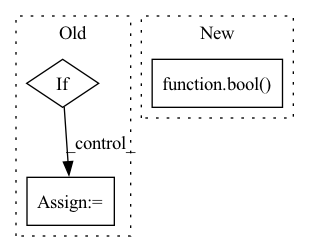

Pattern ID :41518
Before Change
// adjust the step size
if accepted and not t1_achieved:
if errnorm == 0:
factor = self.max_factor
else:
factor = min(self.max_factor, self.step_mult * errnorm ** self.error_exponent)
if prev_rejected:
factor = min(1.0, factor)
After Change
prev_rejected = not accepted
rk_state = (fnew, tnew, ynew, h)
t1_achieved_all = bool( torch.all(t1_achieved).cpu().detach().item())
return rk_state, t1_achieved_all
class RK23(RKAdaptiveStepSolver):
In pattern: SUPERPATTERN
Frequency: 5
Non-data size: 3
Instances Fragment ID: 116635794
Project Name: xitorch/xitorch
Commit Name: c6f0785664d60d1310778d43f14a3464660ea4d9
Time: 2021-12-30
Author: firman.kasim@gmail.com
File Name: xitorch/_impls/integrate/ivp/adaptive_rk.py
M Class Name: RKAdaptiveStepSolver
N Class Name: RKAdaptiveStepSolver
M Method Name: _single_step(3)
N Method Name: _single_step(3)
M Parent Class: object
N Parent Class: object
M File Name: xitorch/_impls/integrate/ivp/adaptive_rk.py
N File Name: xitorch/_impls/integrate/ivp/adaptive_rk.py
M Start Line: 85
M End Line: 122
N Start Line: 125
N End Line: 165
Before Change
self.population_energies[0]))
// should the solver terminate?
if np.any(np.isinf(self.population_energies)):
intol = False
else:
intol = (np.std(self.population_energies) <=
self.atol +After Change
if self.callback:
c = self.tol / (self.convergence + _MACHEPS)
warning_flag = bool( self.callback(self.x, convergence=c))
if warning_flag:
status_message = ("callback function requested stop early"
" by returning True")
Fragment ID: 116635810
Project Name: scipy/scipy
Commit Name: a50ca1edd57935e1006cdb146d6c5bcf231c859f
Time: 2020-03-17
Author: andyfaff@gmail.com
File Name: scipy/optimize/_differentialevolution.py
M Class Name: DifferentialEvolutionSolver
N Class Name: DifferentialEvolutionSolver
M Method Name: solve(1)
N Method Name: solve(1)
M Parent Class: object
N Parent Class: object
M File Name: scipy/optimize/_differentialevolution.py
N File Name: scipy/optimize/_differentialevolution.py
M Start Line: 743
M End Line: 784
N Start Line: 771
N End Line: 779
Before Change
super().__init__(params)
self.amp = None
if "iter_size" not in self.params:
self.params["iter_size"] = 1
self.iter_size = self.params["iter_size"]
def train_step(self, batch, state) -> dict:After Change
self.iter_size = (1 if "iter_size" not in self.params
else int(self.params["iter_size"]))
self.amp = (False if "amp" not in self.params
else bool( self.params["amp"]) )
self.scaler = torch.cuda.amp.GradScaler() if self.amp else None
def train_step(self, batch, state) -> dict: Fragment ID: 116635809
Project Name: osai-ai/dokai
Commit Name: 3e459cfa713e470562e7eaa03aef0d828d1bd203
Time: 2021-03-23
Author: ruslan1123@gmail.com
File Name: example/cifar_advanced.py
M Class Name: CifarModel
N Class Name: CifarModel
M Method Name: __init__(2)
N Method Name: __init__(2)
M Parent Class: argus.Model
N Parent Class: argus.Model
M File Name: example/cifar_advanced.py
N File Name: example/cifar_advanced.py
M Start Line: 133
M End Line: 137
N Start Line: 119
N End Line: 123
Before Change
def has_overflow(self, partition_gradients=True):
if partition_gradients:
if self.overlap_comm:
self.local_overflow = self._has_inf_or_nan(self.gpu_sum)
self.gpu_sum = torch.zeros(1, dtype=torch.float).cuda()
overflow = self.local_overflow if self.offload_optimizer else self.has_overflow_partitioned_grads_serial(
)After Change
def has_overflow(self, partition_gradients=True):
if partition_gradients:
with torch.cuda.stream(self.__reduce_and_partition_stream):
self.local_overflow = bool( self.__inf_or_nan_tracker.item())
self.__inf_or_nan_tracker.zero_()
overflow = self.local_overflow
//overflow = self.has_overflow_partitioned_grads_serial() Fragment ID: 116635796
Project Name: microsoft/deepspeed
Commit Name: 4912e0ad7efcaf97389ae944259aa0e9f331038a
Time: 2022-01-20
Author: 31414860+jfc4050@users.noreply.github.com
File Name: deepspeed/runtime/zero/stage3.py
M Class Name: DeepSpeedZeroOptimizer_Stage3
N Class Name: DeepSpeedZeroOptimizer_Stage3
M Method Name: has_overflow(2)
N Method Name: has_overflow(2)
M Parent Class: object
N Parent Class: object
M File Name: deepspeed/runtime/zero/stage3.py
N File Name: deepspeed/runtime/zero/stage3.py
M Start Line: 2861
M End Line: 2866
N Start Line: 2728
N End Line: 2732
Before Change
super().__init__(params)
self.amp = None
if "iter_size" not in self.params:
self.params["iter_size"] = 1
self.iter_size = self.params["iter_size"]
def train_step(self, batch, state) -> dict:After Change
self.iter_size = (1 if "iter_size" not in self.params
else int(self.params["iter_size"]))
self.amp = (False if "amp" not in self.params
else bool( self.params["amp"]) )
self.scaler = torch.cuda.amp.GradScaler() if self.amp else None
def train_step(self, batch, state) -> dict: Fragment ID: 116635791
Project Name: osai-ai/dokai
Commit Name: 7bf7f084cae8ce93321175dc52bd9f5acbdf770b
Time: 2021-03-23
Author: ruslan1123@gmail.com
File Name: example/cifar_advanced.py
M Class Name: CifarModel
N Class Name: CifarModel
M Method Name: __init__(2)
N Method Name: __init__(2)
M Parent Class: argus.Model
N Parent Class: argus.Model
M File Name: example/cifar_advanced.py
N File Name: example/cifar_advanced.py
M Start Line: 133
M End Line: 137
N Start Line: 119
N End Line: 123